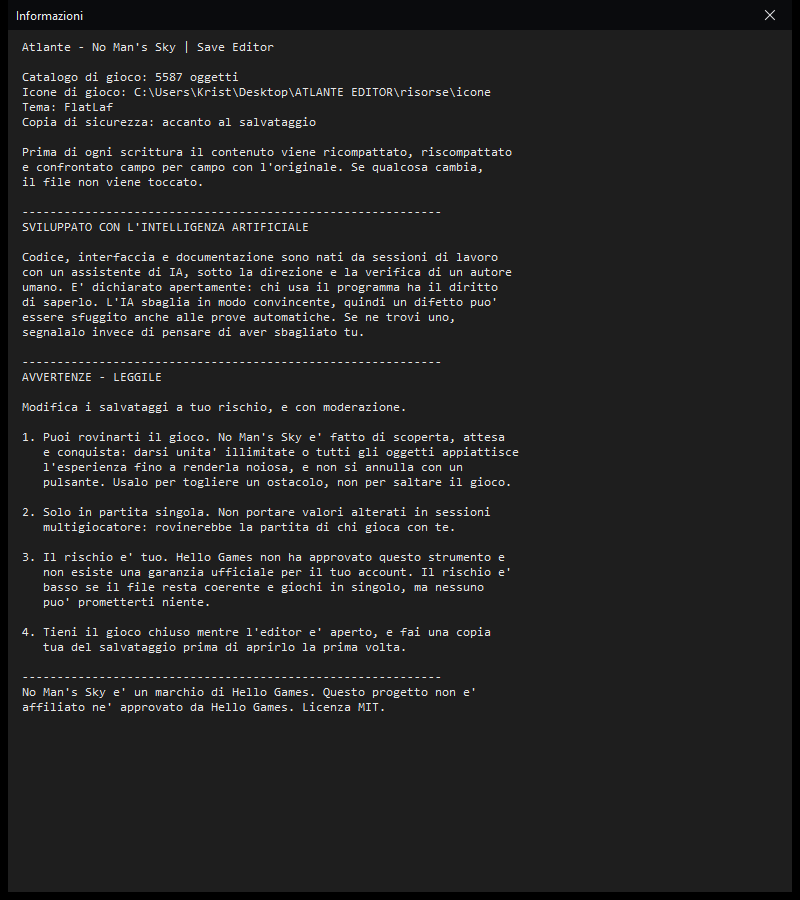

Atlante
No Man's Sky | Save Editor
Sviluppato con IA
Scritto da zero in Java, senza dipendenze esterne. Legge i salvataggi, ne decodifica le chiavi cifrate, li mostra in un albero con le icone di gioco e li riscrive verificando che i dati non cambino.
Prima di ogni scrittura il contenuto viene ricompattato, riscompattato e confrontato campo per campo con l'originale: se anche un solo valore differisce, il file non viene toccato.
Prima di usarlo: leggilo con calma
Modifica i tuoi salvataggi a tuo rischio, e con moderazione. Un editor di salvataggi permette di alterare dati che il gioco non si aspetta di vedere alterati. Tre cose da tenere a mente:
- Puoi rovinarti il gioco. No Man's Sky è fatto di scoperta, attesa e conquista. Darsi unità illimitate, la nave al massimo o tutti gli oggetti appiattisce l'esperienza fino a renderla noiosa, e quello non si annulla con un pulsante. Usane poco, e per togliere un ostacolo — non per saltare il gioco.
- Il multigiocatore è un'altra cosa. L'editor è per la partita in singolo. Non usarlo per portare valori alterati in sessioni con altri giocatori: rovinerebbe la loro partita.
- Hello Games non ha approvato questo strumento. Non esiste una garanzia ufficiale che l'uso di un editor di salvataggi non comporti conseguenze sul tuo account. Il rischio è piccolo se il file resta coerente e giochi in singolo, ma è tuo: valuta tu se vale la pena.
Un consiglio pratico che vale più degli altri: fai una copia del tuo salvataggio prima di aprirlo la prima volta, e tieni il gioco chiuso mentre l'editor è aperto.
Questo software è stato sviluppato con l'intelligenza artificiale
Il codice, l'interfaccia, la documentazione e i commenti sono nati da sessioni di lavoro con un assistente di IA, sotto la direzione, la verifica e le correzioni di un autore umano. È dichiarato apertamente perché chi legge il codice ha il diritto di saperlo.
- In bene: il progetto è stato scritto in tempi molto più brevi del solito, con 26 prove automatiche e una verifica che confronta i dati campo per campo prima di ogni scrittura.
- In male: l'IA sbaglia, e sbaglia in modo convincente. Un difetto può essersi nascosto dove le prove non arrivano.
- Perciò: se trovi qualcosa di storto, apri una segnalazione. È il contributo più utile che puoi dare.
La stessa dichiarazione, con le avvertenze, sta anche dentro il programma: la trovi nella finestra Informazioni.
Il pacchetto è pronto all'uso: si estrae e si fa doppio clic, senza compilare niente. Serve solo Java installato.
L'interfaccia
Non è un disegno preparato a parte: l'immagine è la fotografia dell'applicazione vera mentre legge un salvataggio reale. Gli oggetti mostrano l'icona e il nome di gioco presi dal catalogo, non la sigla interna.

Le avvertenze, dentro il programma
Chi apre l'editor può non aver mai visto questa pagina. Per questo la dichiarazione sull'IA e le quattro avvertenze d'uso stanno anche nella finestra Informazioni del programma, dove si trovano prima di toccare qualsiasi cosa.

Cosa fa
| Funzione | Stato |
|---|---|
| Lettura dei salvataggi Xbox Game Pass | funziona |
| Lettura dei salvataggi Steam e GOG | funziona |
| Dati account (ricompense, QuickSilver) | funziona |
| Scompattazione e ricompressione LZ4 | funziona |
| Decodifica delle chiavi cifrate | 640.510 su 640.567 |
| Catalogo di gioco con nomi, icone e descrizioni | 5.587 voci |
| Modifica dei valori e scrittura con verifica | funziona |
| Copertura totale dei campi del salvataggio | tutti |
Tre scelte che vale la pena raccontare
I numeri non passano per la virgola mobile
Un campo come 0.6000000238418579 riscritto come 0.6 è un valore diverso, e il gioco se ne accorge. Ogni numero conserva il testo originale.
La verifica viene prima della scrittura
Non c'è un "sei sicuro?" da cliccare: se il contenuto non sopravvive al giro completo, il programma si ferma da solo. Una copia di sicurezza viene comunque creata.
Il formato è documentato
Struttura dei blocchi, intestazioni dei metadati, forma dell'indice dei contenitori: tutto ricavato leggendo i byte e scritto nel README, perché serva anche a chi non usa questo programma.
Requisiti
Dipende da cosa vuoi fare.
- Per usare il programma: Java 8 o superiore installato. Basta il JRE, non serve il JDK, perché le classi sono già compilate dentro il pacchetto. Si scarica, si estrae e si fa doppio clic su
avvia.bat. - Per compilare dai sorgenti: un JDK 8 o superiore (serve
javac). Nient'altro: nessuna libreria da scaricare, nessun gestore di pacchetti. Si compila concompila.batsu Windows o./compila.shaltrove.
Il pacchetto si porta dietro il tema, il catalogo e le 3.518 icone del gioco: non c'è nient'altro da scaricare.
In breve, l'essenziale
Usalo con moderazione
Serve a togliere un ostacolo, non a saltare il gioco. Riempire tutto subito è il modo più veloce per toglierti il divertimento.
Solo in singolo
Non portare partite alterate in sessioni con altri giocatori. Rovineresti la loro esperienza, e non è una cosa che si fa.
Il rischio è tuo
Hello Games non ha approvato questo strumento. Non esiste una garanzia ufficiale per il tuo account: valuta tu se usarlo.
Sviluppato con IA
Codice e documentazione nati con un assistente di intelligenza artificiale. I difetti possono esserci: se ne trovi uno, segnalalo.